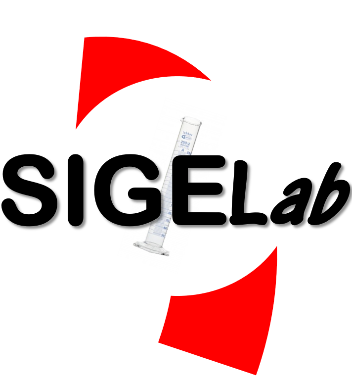

Sistema Integrado De Gestión Estratégica De Laboratorios De La Universidad Del Valle
Consultar Servicios Gestionar Laboratorio
Vicerectoría de Investigaciones
Sistema Integrado De Gestión Estratégica De Laboratorios De La Universidad Del Valle